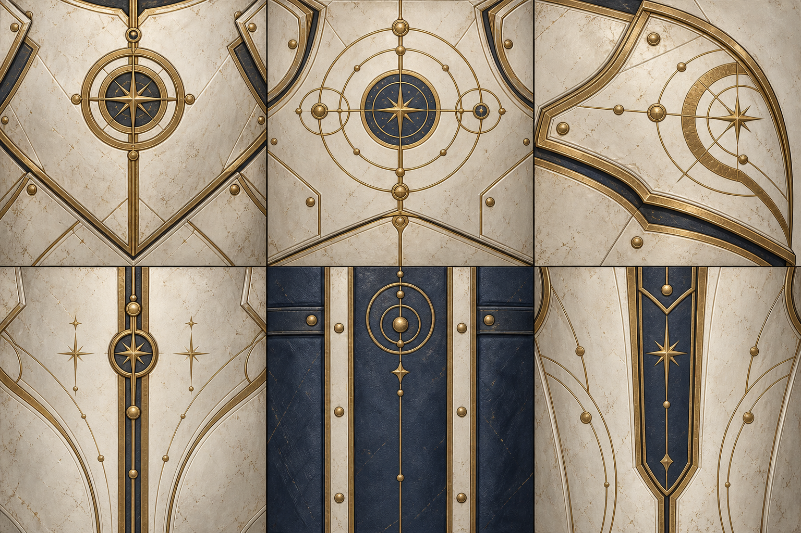

Part-specific ivory/brass/navy surfaces and fitted bracers/greaves improve the advanced outfit. Each revision passes144idle source comparisons; new fitted cores pass12pose checks. Revision2 replaces residual purple shoulder material with the existing painted cloth.
Full pilot art remains FAIL: the hair mass and garment shapes look simplified against F04, particularly the rear hair silhouette and broad smooth coat. Full advanced outfit fit, motion and lighting remain unqualified. No animation/roster expansion occurred. Final production style approval is separate.
These diagnostic crops are downscaled from native images. Reference camera, anatomy and lighting differ; this compares style and approximate visible figure height, not world projection. Original pixels remain unchanged.
0,45,90,135,180,225,270,315degrees. The capture uses50/150px projected2m body axes; silhouette extents differ. Scroll horizontally for native pixels; no CSS enlargement.
One built-in generation;1536×1024RGB. The six surfaces supply ornament/material color. Geometry supplies silhouettes, pivots and attachment. No native-alpha or free-generation claim.

Report · Receipt · Latest neutral asset · V2pixel checks · Fit/source checks · Live local fixture